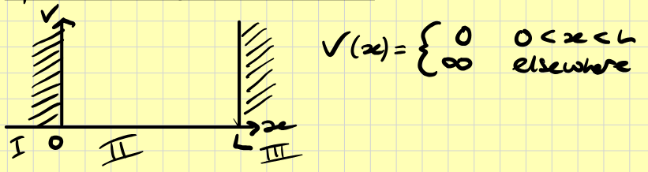
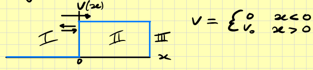
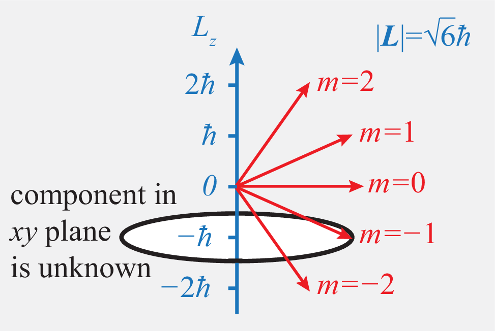
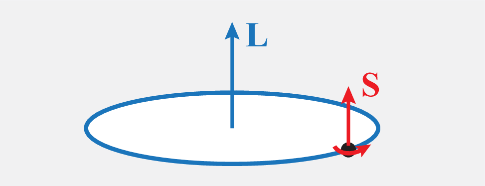
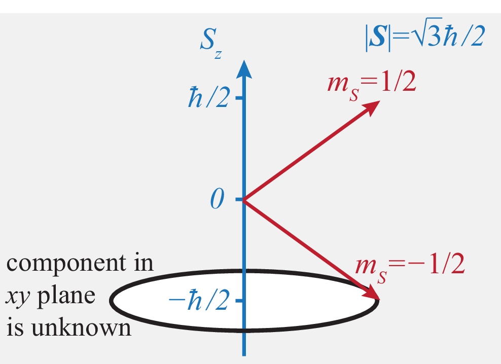
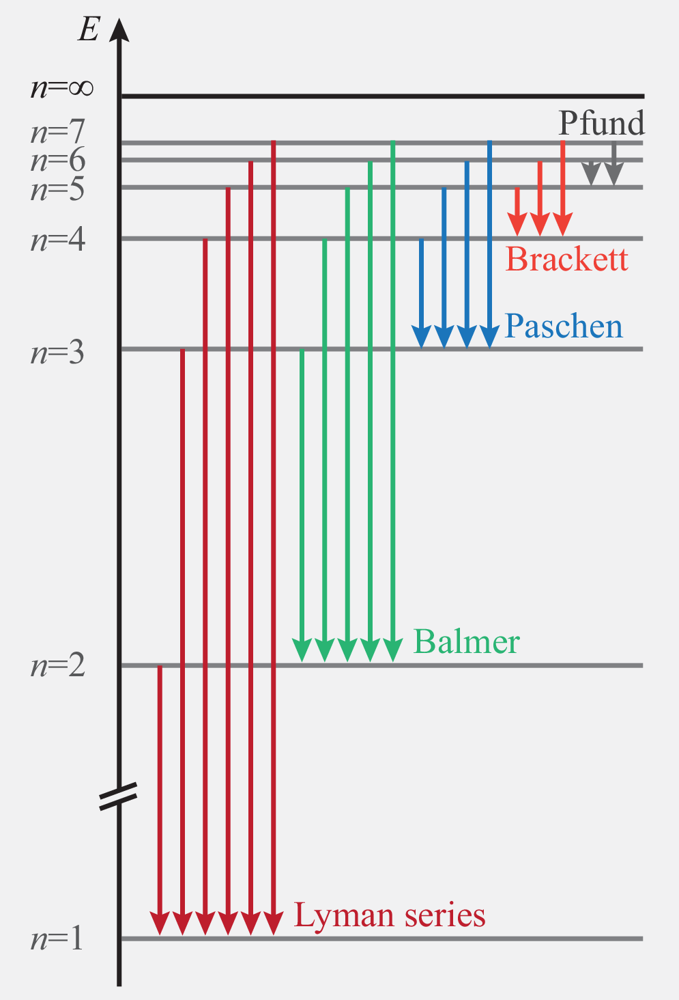

Compton scattering occurs when X-rays hit an electron at rest. One observes that the wave changes its wave length to \(\lambda\lt\lambda'\) , and that this change depends on the deflection angle \(\phi\). We have a wave \[\exp(i\mathbf{k}\cdot\mathbf{r}-i\omega t)\] \(\mathbf{k}=k\mathbf{n}\) and \(k=|\mathbf{k}|=2\pi/\lambda\implies\omega/k=c\). However we know that X-rays are streams of photons with energy \[E=\hbar\omega\] and momentum \[\mathbf{p}=\hbar\mathbf{k}\] We can use energy conservation to find \[\text{Momentum:}\quad\hbar\mathbf{k}+0=\hbar\mathbf{k}'+\mathbf{p}_e\] \[\text{Energy:}\quad\hbar\omega+m_ec^2=\hbar\omega+\sqrt{m_e^2c^4+c^2p_e^2}\] It follows that \[|\mathbf{p}_e|^2=|\hbar(\mathbf{k}-\mathbf{k}')|^2=\hbar^2(k^2+k'^2-2\mathbf{k}\cdot\mathbf{k}')\] \[\implies\boxed{\lambda'-\lambda=\frac{h}{m_ec}(1-\cos\phi)}\]
When small particles are sent through small slits, they randomly change direction in violation to classical mechanics. Over many experimental runs, one can identify a probability \(p(\mathbf{r})\,d\mathbf{r}\) that a particle arrives in a some small region \(d\mathbf{r}\), around a point \(\mathbf{r}\), and this probability looks similar to the intensity distribution of a diffracted wave. We find that \[P(\mathbf{r})=|\Psi(\mathbf{r},t)|^2\] \[\int_{-\infty}^\infty P(\mathbf{r})\,d\mathbf{r}=1\]
We can manipulate the wave equation to find \[\boxed{i\hbar\frac{\partial}{\partial t}\Psi(x;t)=\hat{H}\Psi(x;t)}\] explicitly this is \[\boxed{i\hbar\frac{\partial}{\partial t}\Psi=-\frac{\hbar^2}{2m}\frac{\partial^2\Psi}{\partial x^2}+V(x)\Psi}\] or compactly \[\boxed{\hat{E}\Psi=\hat{H}\Psi}\] where
These are "operators" which we treat like matrices. They essentially define mathematical operations we can do to "query" an observable of the system. Note: for 3D, the grad of the position is used in the momentum operator.
If the Hamiltonian does not depend on time, energy is conserved. This results in a simplification of the Schrodinger equation, since we can separate out the time variable. Let us write \[\Psi=\exp(-iEt/\hbar)\psi(x)\]where the time dependence \(\propto\exp(-iEt/\hbar)=\exp(-i\omega t)\) is the same as for a propagating plane wave. Since we have \(\hat{E}\Psi=E\Psi\), we then substitute this into the equation and obtain \[E\psi(x)\exp(-iEt/\hbar)=\hat{H}\psi(x)\exp(-iEt/\hbar)\] we can divide by the time dependant factor to find the stationary Schrodinger equation: \[\boxed{E\psi=\hat{H}\psi}\] This is the most important equation in this module.
The stationary Schrodinger equation is \[E\psi=-\frac{\hbar^2}{2m}\psi''(x)+V(x)\psi(x)\] This is a second order linear homogeneous ordinary differential equation. The solutions therefore follow the superposition principle. The solution must be bounded for \(|x|\to\infty\) as if it weren't the case this would violate \(|\psi(x)|^2\).
From linear algebra, a matrix equation \[A\mathbf{v}=\lambda\mathbf{v}\] states that for a matrix \(A\) multiplied with a vector \(\mathbf{v}\) results in a scalar (eigenvalue of \(A\)) \(\lambda\) multiplied with the same vector this makes \(\mathbf{v}\) an eigenvector of \(A\). For the Schrodinger equation, we similarly have that \(\psi\) is an eigenfunction of \(\hat{E}\) and that \(E\) is an eigenvalue. These are correspondingly also named eigenstates and eigenenergies.

We can consider this problem region by region. In region II we have \[E\psi(x)=-\frac{\hbar^2}{2m}\frac{d^2\psi}{dx^2}\] hence \[\psi_{II}=Ae^{ikx}+Be^{-ikx}\qquad\text{where}\;k=\sqrt{2mE}/\hbar\] In regions I and III \[E\psi=-\frac{\hbar^2}{2m}\psi''+\infty\psi\implies\psi_I,\psi_{III}=0\;\text{(only solution)}\] Since \(\psi\) has to be continuous we have the following boundary conditions \[\Psi_I(0)=\Psi_{II}(0)=0\qquad\qquad \Psi_{II}(L)=\Psi_{III}(L)=0\] Thus \[0=Ae^0+Be^0=A+B\implies A=-B\] Hence \[\Psi_{II}=A(e^{ikx}-e^{ikx})=2iA\sin(kx)\] Since we need this to be zero at \(L\) (and \(0\)), \[kL=n\pi\implies k_n=\frac{n\pi}{L}\] Hence \[E_n=\frac{k^2_n\hbar^2}{2m}=\frac{\pi^2\hbar^2}{2mL^2}n^2\] and \[P(x)=\left\{\begin{array}{ll} 4|A|^2\sin^2\left(\frac{\pi nx}{L}\right) & 0\lt x\lt L\\ 0 & \text{elsewhere} \end{array}\right.\] We can integrate this and set it equal to 1 to find \(A\): \[\int_{-\infty}^\infty P(x)\,dx=1\implies 2A=\sqrt\frac{2}{L}\]

In region I we have \[E\psi_I=-\frac{\hbar^2}{2m}\psi''\] with solution \[\psi_I=Ae^{ikx}+Be^{-ikx}\qquad\qquad k=\frac{\sqrt{2mE}}{\hbar}\] In region II we have the Schrodinger equation \[E\psi_{II}=-\frac{\hbar^2}{2m}\psi''_{II}+V_0\psi_{II}\implies (E-V_0)\psi_{II}=-\frac{\hbar}{2m}\psi_{II}\] Note, we're assuming that \(E\lt V_0\) thus \[\psi_{II}=Ce^{ik'x}+De^{-ik'x}\quad k'=\frac{\sqrt{2m(E-V_0)}}{\hbar}=i\underbrace{\frac{\sqrt{2m(V_0-E)}}{\hbar}}_{=\kappa}\] Thus the solution is actually of the form \[\psi_{II}=Ce^{-\kappa x}+De^{\kappa x}\] however, as in the section of mathematical discussion, we discard \(De^{\kappa x}\) as it is goes to \(\infty\) as \(x\) increases. Now we must join the two regions by "wave matching": \[\begin{align} &\psi_I(0)=\psi_{II}(0),\\ &\implies A+B=C \end{align}\] Moreover, since the potential is finite, the first derivative of the wave function has to be continuous as well: \[\begin{align} &\psi_I'(0)=\psi'_{II}(0),\\ &\implies ik(A-B)=-\kappa C \end{align}\] Hence we can find that \[ik(A-B)=-\kappa(A+B)\implies B=\frac{ik+\kappa}{ik-\kappa}A\] and \[C=\frac{2ik}{ik-\kappa}A\] Reflection probability \[R=\frac{|B|^2}{|A|^2}=1\]
In order to illustrate the dramatic consequences of tunnelling, consider the potential \[V(x)=\left\{\begin{array}{clr} 0 & \text{for}\;x\lt0 & (\text{region I})\\ V_0\gt0 & \text{for}\;0\lt x\lt L & (\text{region II})\\ 0 & \text{for}\;x\gt L & (\text{region III}) \end{array}\right.\] In order to find the quantum-mechanical solution of this problem, first observe that the potential is constant in each of the three regions, so that we can readily write down the separate solutions of the Schrodinger equation, \[\begin{align} &\psi_I=Ae^{ikx}+Be^{-ikx}\\ &\psi_{II}=Ce^{\kappa x}+De^{-\kappa x}\\ &\psi_{III}=Fe^{ikx}+Ge^{-ikx} \end{align}\] with \[k=\frac{\sqrt{2mE}}{\hbar}\qquad\qquad\kappa=\frac{\sqrt{2m(V_0-E)}}{\hbar}\] The amplitudes \(A\) and \(G\) describe incoming particles from the left and right respectively, whereas \(B\) and \(F\) describe outgoing particles. We will assume particles are only sourced from the left \((G=0)\) Meaning that \(B\) now describes only reflections, and \(F\) only transmitted. The probabilities of reflection and transmission are now given by: \[R=\frac{|B|^2}{|A|^2},\qquad\qquad T=\frac{|F|^2}{|A|^2}\] In order to calculate these probabilities, we again use continuity and find four conditions for the five coefficients \[\begin{align} \psi_I(0)&=\psi_{II}(0)\implies A+B=C+D\\ \psi_I'(0)&=\psi_{II}'(0)\implies ik(A-B)=-\kappa(C-D)\\ \psi_{II}(L)&=\psi_{III}(L)\implies Ce^{-\kappa L}+De^{\kappa L}=Fe^{ikL}\\ \psi_{II}'(L)&=\psi_{III}'(L)\implies -\kappa\left(Ce^{-\kappa L}-De^{\kappa L}\right)=ikFe^{ikL} \end{align}\] This linear system of equations can be solved (e.g. by Gaussian elimination) in order to express all coefficients by the amplitude of the incoming particle. In particular, one finds the slightly unwieldy expression \[F=A\frac{4ik\kappa\exp{ikL}}{(\kappa+ik)^2\exp(-\kappa L)-(\kappa-ik)^2\exp(\kappa L)}\] Hence \[T=\frac{4k^2\kappa^2}{4k^2\kappa^2+(k^2+\kappa^2)\sinh^2(\kappa L)}\] Since \(T\gt0\) we have to conclude that there is a finite probability that the particle tunnels through the wall.
The distinction of bound states and extended states can be carried over to general one-dimensional potentials with arbitrary position dependence. Generally, one finds:
The classical harmonic oscillator describes a particle subject to a restoring force \(F=-m\omega^2x\) proportional to the distance from an equilibrium position \(x=0\). This force corresponds to a parabolic potential energy \[V(x)=\frac{1}{2}m\omega^2 x^2\] So we find the Schrodinger equation \[E\psi=-\frac{\hbar^2}{2m}\psi''+\frac{1}{2}m\omega^2x^2\psi\] This equation is again a linear differential equation of second order, but now one coefficient is position dependent. Since there are forces, the solutions are not plane waves. We have the ansatz \(\psi=Ae^{-iS(x)/\hbar}\). This is almost the plane wave solution, but we dont know the \(x\) dependence so we add a function \(S(x)\) which is of \(x\). \[\psi'=\frac{iS'}{\hbar}\psi\qquad\qquad\psi''=\left[\frac{iS''}{\hbar}+\left(\frac{iS'}{\hbar}\right)^2\right]\psi\] \[\implies E\psi=-\frac{\hbar^2}{2m}\left[\frac{iS''}{\hbar}-\frac{(S')^2}{\hbar^2}\right]\psi+\frac{1}{2}m\omega^2x^2\psi\] We can divide through by \(\psi\) \[\implies\textcolor{red}{E}=-\frac{\hbar^2}{2m}\left[\textcolor{red}{\frac{iS''}{\hbar}}-\textcolor{orange}{\frac{(S')^2}{\hbar^2}}\right]+\textcolor{orange}{\frac{1}{2}m\omega^2x^2}\] Since \(E\) is a constant, we want to remove the \(x\) dependence, so we can observe that we need to remove the last term in the equation. We can do this by letting \(S(x)=ax^2\) and then equating the parts of the equation I have colour coded. We find \[\textcolor{red}{E}=-\frac{\hbar^2}{2m}\left[\textcolor{red}{\frac{2ia}{\hbar}}-\textcolor{orange}{\frac{4a^2x^2}{\hbar^2}}\right]+\textcolor{orange}{\frac{1}{2}m\omega^2x^2}\] So we find \[E=-\frac{i\hbar a}{m}\] and \[\frac{\hbar^2}{2m}\frac{4a^2x^2}{\hbar^2}=-\frac{1}{2}m\omega^2x^2\implies a=\pm\frac{im\omega}{2}\] Hence \[\psi=A\exp\left(i\frac{ax^2}{\hbar}\right)=A\exp\left(\mp\frac{m\omega}{2\hbar}x^2\right)\] We bin the positive solution (-ve \(a\)) as it is unbounded, so this is a Gaussian function. \[\psi=Ae^{-\alpha x^2},\qquad\alpha=\frac{m\omega}{2\hbar}\] \[\implies P(x)=|A|^2e^{-\alpha x^2}\] As for (ground state) energy we substitute for \(a\): \[E=-\frac{i\hbar(im\omega)}{2m}=\frac{\hbar\omega}{2}\] Now to find \(A\): \[\int^\infty_{-\infty}P(x)\,dx=A^2\sqrt{\frac{\pi\hbar}{m\omega}}=1\implies A=\left(\frac{m\omega}{\pi\hbar}\right)^{1/4}\] Fancy polynomial work is required to find higher energy levels and we find \[E_n=\hbar\omega\left(\frac{1}{2}+n\right)\]
In analogy to the case of position \(x\), we can introduce a momentum wave function \(\tilde{\psi}(p)\) which delivers the probability to find the value \(p\) in a momentum measurement as \(P(p)=|\tilde{\psi}(p)|^2\). This momentum wave function is given by the Fourier transform of the normal wave function. \[\tilde{\psi}(p)=(2\pi\hbar)^{-1/2}\int^\infty_{-\infty}\exp\left(\frac{-ipx}{\hbar}\right)\psi(x)\,dx\] This works by decomposing \(\psi(x)\) into plane waves \(\exp(ipx/\hbar)\). Note that such plane waves are eigenfunctions of the momentum operator \(\hat{p}\exp(ipx/\hbar)=p\exp(ipx/\hbar)\). We can also write this equation as \[\tilde{\psi}(p)=\int^\infty_{-\infty}\psi_p^*(x)\psi(x)\,dx\] where \(\psi_p(x)\) is the momentum eigenfunction.
The averaged result of many experiments measuring some observable \(\hat{A}\) is called the expectation value of \(\hat{A}\), denoted by \(\langle A\rangle\). According to the general rules for probabilities, the expectation value is obtained from the probability density \(P(A)\) by weighting it with the result: \[\langle A\rangle=\int AP(A)\dd{A}\] We can also calculate expectation values of functions of \(A\), such as \(A^2\): \[\langle A^2\rangle=\int A^2P(A)\dd{A}\] Hence the expectation value of position is \[\langle x\rangle =\int x|\psi(x)|^2\dd{x}\] The expectation value of momentum is given as \[\ev{p}=\int p\abs{{\psi}(p)}^2\dd{p}\] but we can use Fourier transform theorems to say \[\begin{align} \ev{p}&=\int\psi^*(x)[\hat{p}\psi(x)]\dd{x}\\ &=-i\hbar\int\psi^*(x)\psi'(x)\dd{x} \end{align}\]
A particularly useful quantity related to the expectation values is the standard deviation \[\Delta A=\sqrt{\ev{A^2}-\ev{A}^2}\] In quantum mechanics the standard deviation is know as the uncertainty of the the observable \(A\). Hence the variance \(\sigma^2=\ev{A^2}-\ev{A}^2\).
Using standard theorems about the Fourier transformation (see PHYS213), a strongly peaked position wave function corresponds to a very broad momentum wave function , and vice versa. Mathematically, this can be expressed as a relation for the uncertainties of momentum and position: \[\Delta x\Delta p\geq\hbar/2.\] In the Schrodinger equation, time is not an observable but a parameter. Hence, no operator is associated with time. However, it is still useful to talk about the duration of events in quantum mechanics. A good example is an atomic excitation, which decays over a certain time \(\Delta t\). If one looks at the outgoing radiation, the frequency is not sharp but spread over a range \(\Delta\omega\sim 1/\Delta t\). In quantum mechanics, frequency is related to energy via \(E=\hbar\omega\), and one ends up with the energy-time uncertainty relation \[\Delta t\Delta E\geq\hbar/2\]
In Dirac notation, vectors are denoted as \(\ket{\psi}\). These vectors form a complex linear vector space, which entails the following properties:
These operations obey the distributive law: \[(\alpha+\beta)(\ket{\psi}+\ket{\chi})=\ket{\alpha\psi}+\ket{\beta\psi}+\ket{\alpha\chi}+\ket{\beta\chi}.\] The scalar product is a generalised dot product with associates a complex number \(\innerproduct{\psi}{\chi}\) to any pair of vectors \(\ket{\psi},\ket{\chi}\). The scalar product fulfils: \[\innerproduct{\psi}{\chi}=\innerproduct{\chi}{\psi}^*\] We have \[\begin{align} &\innerproduct{\psi}{\alpha\chi}=\alpha\innerproduct{\psi}{\chi}\\ &\innerproduct{\alpha\psi}{\chi}=\alpha^*\innerproduct{\psi}{\chi}\\ &\innerproduct{\psi+\varphi}{\chi}=\innerproduct{\psi}{\chi}+\innerproduct{\varphi}{\chi}\\ &\innerproduct{\psi}{\varphi+\chi}=\innerproduct{\psi}{\varphi}+\innerproduct{\psi}{\chi}\\ \end{align}\] We have the length \[\norm{\ket{\psi}}=\sqrt{\innerproduct{\psi}}\] and if:
A basis is a collection of vectors \(\ket{n},\; n=1,2,3,\ldots,\mathcal{N}\) such that any vector can be written as a superposition \(\ket{\psi}=\sum_{n=1}^\mathcal{N}\psi_n\ket{n}\) where the complex coefficients \(\psi_n\) are unique. An orthogonal basis fulfils \(\ip{n}{m}=0\), for any \(n\neq m\) furthermore for all \(n\) if \(\ip{n}{n}=1\) the basis is orthonormal. The coefficients are given by \(\psi_n=\ip{n}{\psi}\). For functions \(\psi(x)\) the summation over a discrete index is replaced with integration \[\ket{\psi}=\int\psi(x)\ket{x}\dd{x}\] In this case the dimension of the vector space is infinite. The orthonormality of a basis can be stated with help of the Dirac delta function, \(\ip{x}{x'}=\delta(x-x')\). Finally we also have the scalar product \[\innerproduct{\psi}{\chi}=\sum_n\psi_n^*\chi_n=\psi^\dagger\chi\qquad\text{or}\qquad\underbrace{\innerproduct{\psi}{\varphi}=\int\psi^*(x)\varphi(x)\dd{x}}_\text{For continuous states}\] This integral is called an overlap integral. The expression for the expansion coefficients takes the form \(\psi(x)=\innerproduct{x}{\psi}\) and the normalisation condition translates into \[\int\abs{\psi(x)}^2\dd{x}=1\]
An operator \(\hat{A}\) converts any vector \(\ket{\psi}\) into another vector \(\ket{\hat{A}\psi}=\hat{A}\ket{\psi}\). In Dirac notation operators are written as \[\hat{A}=\sum_{nm}A_{nm}\ket{n}\bra{m}\] and the action of an operator is obtained from the multiplication rule \(\bra{m}\cdot\ket{\psi}=\innerproduct{m}{\psi}\). Thus, \[\hat{A}\ket{\psi}=\sum_n\left(\sum_mA_{nm}\innerproduct{m}{\psi}\right)\ket{n}\] Assuming that the states \(\ket{n},\ket{m}\) in the definition of \(\hat{A}\) form an orthonormal basis, the operator can be represented by \(N\times N\) dimensional square matrices \[A=\pmatrix{A_{11} & \ldots & A_{1N}\\ \vdots & \ddots & \vdots\\ A_{N1} & \ldots & A_{NN}}\] where the matrix element \(A_{nm}\) are obtained from \[A_{nm}=\innerproduct{n}{\hat{A}m}=\mel{n}{\hat{A}}{m}\]
We have the eigenvalue equation \[\hat{A}\ket{n}=a_n\ket{n}\] the numbers \(a_n\) are eigenvalues, and associated vectors \(\ket{n}\) are eigenvectors.
Postulate I: All experimentally accessible information about a quantum system is contained in a state vector \(\ket{\psi}\).
An example is the wave function \(\psi(x)\) of a point particle in one dimension. In three dimensions a point particle is described by a wave function \(\psi(x,y,z)\). We will also discuss the state of two particles with position \(\vb{r}_1\) and \(\vb{r}_2\), which is described by a wave function \(\psi(\vb{r}_1,\vb{r}_2)\). Furthermore, we encounter the spin of an electron, which is described by a two-component vector \(\psi=\pmatrix{\psi_\uparrow\\\psi_{\downarrow}}\).
Postulate II: Each experimentally observable quantity \(\hat{A}\) is represented by a hermitian linear operator.
Here, the term observable refers to any measurable quantity. Examples are position \(\hat{x}=x\), momentum \(\hat{p}=-i\hbar\dv{x}\), energy \(\hat{H}=\hat{p}^2/2m+V(x)\), but also kinetic energy \(\hat{T}=\hat{p}^2/2m\) and potential energy \(\hat{V}=V(x)\) can serve as observables. In the context of quantum mechanics, eigenvectors \(\ket{a_n}\) of an observable \(\hat{A}\) are also called eigenstates. The property of hermiticity ensures that all the eigenvalues \(a_n\) are real, while the eigenstates can be used to construct an orthonormal basis.
Postulate III: The time evolution \(\ket{\psi(t)}\) of a quantum state is governed by the Schrodinger equation \[i\hbar\dv{t}\ket{\psi(t)}=\hat{H}(t)\ket{\psi(t)},\] where \(\hat{H}\) is a system-specific hermitian operator called Hamiltonian.
Given an initial state \(\ket{\psi(t_0)}\), the general solution can always be written as \(\ket{\psi(t)}=\hat{U}(t,t_0)\ket{\psi(t_0)}\), where \(\hat{U}\) is a unitary operator called the time evolution operator. This operator fulfils the Schrodinger equation \(i\hbar\dv{t}\hat{U}(t,t_0)=\hat{H}(t)\hat{U}(t,t_0),\) with initial condition \(\hat{U}(t,t_0)=\hat{I}\). For a time-independent Hamiltonian, the time evolution operator takes the explicit form \[\boxed{\hat{U}(t,t_0)=\exp\left[\frac{-i(t-t_0)}{\hbar}\hat{H}\right]}\]
Postulate IVa: In an experiment that determines the value \(a\) of an observable \(\hat{A}\), the only possible (allowed) values are the eigenvalues \(a_n\) of \(\hat{A}\).
E.g. when one measures the energy of a particle bound in a potential well, the only possible results are the discrete energies \(E_n\) determined by the stationary Schrodinger equation.
Postulate IVb: If the normalised state of the system at the time of the measurement is \(\ket{\psi}\), each outcome occurs with probability \[P(a)=\sum_{a_n=a}\abs{\innerproduct{n}{\psi}}^2=\sum_{a_n=a}\ev{\hat{P}_n}{\psi},\] where \(\ket{n}\) is the eigenstate associated with \(a_n\) and \(\hat{P}_n=\op{n}\) is the associated projection operator.
Using the orthonormality of the eigenstates \(\ket{n}\) and the normalisation condition \(\ip{\psi}=1\), it follows that the probability \(P(a)\) is automatically normalised: \(\sum_aP(a)=1\) if \(a\) is discrete, and \(\int P(a)\dd{a}=1\) if \(a\) is continuous. Disregarding for the moment the possibility that eigenvalues are degenerate, it is useful to interpret the probability in terms of a generalised wave function \[\psi_A(a_n)=\ip{n}{\psi}\] which consists of the wave function in the eigenbase of \(\hat{A}\). \[\ket{\psi}=\sum_n\psi_A(a_n)\ket{n}\] The probability \(P(a)\) that an experiment returns the value \(\hat{A}=a\) is then just given by \[P(a)=\abs{\psi_A(a)}^2\] In one dimension, the generalised wavefunction is given by the overlap integral \[\psi_A(a_n)=\int\psi^*_n(x)\psi(x)\dd{x}\]
Postulate IVc: A measurement with outcome \(a\) transforms the quantum state into the state \[\ket{\psi'}=\sqrt{1/P(a)}\sum_{a_n=a}\hat{P}_n\ket{\psi}\]
We define the expectation values of an observable \(A\) via \(\ev{A}=\int aP(a)\dd{a}\) or \(\ev{a}=\sum_a aP(a)\). This represents the averages outcome of many experiments on identically prepared quantum systems. If we insert the expression for the probability and make use of the form \(\hat{A}=\int_n\op{n}\) of the operator in the eigenrepresentation we find \[\ev{A}=\ev{\hat{A}}{\psi}\]
For each pair of operators \(\hat{A}^{(1)},\hat{A}^{(2)}\), we can introduce a new operator, called the commutator, which is denoted by \([\hat{A}^{(1)},\hat{A}^{(2)}]\). This operator is defined as \[[\hat{A}^{(1)},\hat{A}^{(2)}]=\hat{A}^{(1)}\hat{A}^{(2)}-\hat{A}^{(2)}\hat{A}^{(1)}\] In other words, the commutator is an operator which acts as \[[\hat{A}^{(1)},\hat{A}^{(2)}]\psi=\hat{A}^{(1)}\hat{A}^{(2)}\psi-\hat{A}^{(2)}\hat{A}^{(1)}\psi\] If \([\hat{A}^{(1)},\hat{A}^{(2)}]=0\) we say that \(\hat{A}^{(1)}\) and \(\hat{A}^{(2)}\) commute. An example is \([\hat{x},\hat{p}_y]=0\). The most important of all commutators:
For \(A^{(1)}, A^{(2)}\) we have \[\Delta A=\sqrt{\ev{A^2}-\ev{A}^2}\] we can say \[\Delta A^{(1)}A^{(2)}\geq\frac{1}{2}\abs{\braket{[\hat{A}^{(1)},\hat{A}^{(2)}]}}\] This gives a lower bound for the product of uncertainties of two observables, and expresses this lower bound by the expectation value of their commutator. For momentum and position, we can recover H.U.P.
If two observances commute, we find that \(\Delta\hat{A}\Delta\hat{B}\geq 0\), and such both can be determined precisely at the same time. These are called simultaneous variables. If they do not commute then they are called incompatible as they cannot both be fixed at the same time.
Perturbation theory is a general method to analyse complex quantum systems in terms of simpler variants. The method relies on the expectation values, matrix elements and overlap integrals just introduced, which we now use to break down complex quantum processes into simpler parts. We focus on the simplest version of the method, which results in simple systematic approximations of energy levels.
We want to find approximations for the energies \(E_n\) and eigenstates \(\ket{\psi_n}\) of a Hamiltonian \(\hat{H}\), \[E_n\ket{\psi_n}=\hat{H}\ket{\psi_n},\] assuming that the Hamiltonian is of the form \(\hat{H}=\hat{H}^{(0)}+\hat{w}\), where \(\hat{H}^{(0)}\) represents a simplified system with energies \(E_n^{(0)}\) and eigenstates \(\ket{\psi_n}^{(0)}\). Solving the Schrodinger equation: \[E_n^{(0)}\ket{\psi_n^{(0)}}=\hat{H}^{(0)}\ket{\psi_n^{(0)}}.\] The difference \(\hat{w}=\hat{H}-\hat{H}^{(0)}\) is called the perturbation and the scheme is perturbation theory.
The idea of perturbation theory is to assume that the perturbation \(\hat{w}=\lambda\hat{W}\) is the product of an operator \(\hat{W}\) and a small number \(\lambda\) (determining the strength of the perturbation). Since the Hamiltonian now depends on the parameter \(\lambda\), the energies \(E_n\) and eigenstates \(\ket{\psi_n}\) now also depend on this parameter. We can expand the energies and eigenstates into a series: \[E_n(\lambda)=\sum_{l=0}^\infty\lambda^lE_n^{(l)},\] and \[\ket{\psi_n(\lambda)}=\sum_{l=0}^\infty\lambda^l\ket{\psi_n^{(l)}}.\] Perturbation theory provides a systematic scheme to express the quantities \(E_n^{(l)}\) and \(\ket{\psi_n^{(l)}}\) in terms of the unperturbed energies, the unperturbed eigenstates, and the matrix elements of the perturbation \[W_{mn}=\mel{\psi_m^{(0)}}{\hat{W}}{\psi_n^{(0)}}\] he scheme commences by introducing the series expansions into the Schrodinger equation and sorting the expressions order by order in: \[\begin{align} &E_n^{(0)}\ket{\psi_n^{(0)}}+\\ &\lambda(E_n^{(0)}\ket{\psi_n^{(1)}}+E_n^{(1)}\ket{\psi_n^{(0)}})+\\ &\lambda^2(E_n^{(0)}\ket{\psi_n^{(2)}}+E_n^{(1)}\ket{\psi_n^{(1)}}+E_n^{(2)}\ket{\psi_n^{(0)}})+\\ &\ldots\\ &=\\ &\hat{H}^{(0)}\ket{\psi_n^{(0)}}+\\ &\lambda(\hat{H}^{(0)}\ket{\psi_n^{(1)}}+\hat{W}\ket{\psi_n^{(0)}})+\\ &\lambda(\hat{H}^{(0)}\ket{\psi_n^{(2)}}+\hat{W}\ket{\psi_n^{(1)}})+\\ &\ldots \end{align}\] In order to fulfil this equation, the expressions in front of the powers \(\lambda^l\) have to be identical on both sides of the equation. Since we assume that the perturbation is small, we concentrate on the first few orders
\[\lambda^0:\quad E_n^{(0)}\ket{\psi_n^{(0)}}=\hat{H}^{(0)}\ket{\psi_n^{(0)}}\] This equation is identical to the unperturbed Schrodinger equation and hence verifies that we chose the correct leading coefficient in each series. This result had to be expected since for \(\lambda=0\), \(\hat{H}=\hat{H}^{(0)}\).
\[\lambda^1:\quad E_n^{(0)}\ket{\psi_n^{(1)}}+E_n^{(1)}\ket{\psi_n^{(0)}}=\hat{H}^{(0)}\ket{\psi_n^{(1)}}+\hat{W}\ket{\psi_n^{(0)}}\] The coefficient \(E_n^{(1)}\) and the state \(\ket{\psi_n^{(1)}}\) can now be determined using the orthonormality of the unperturbed eigenstates, i.e. \(\ip{\psi^{(0)}_m}{\psi_n^{(0)}}=\delta_{nm}\). I.e. multiply by a state \(\ket{\psi^{(0)}_m}\) hence \[E_n^{(0)}\ip{\psi_m^{(0)}}{\psi_n^{(1)}}+E_n^{(1)}\delta_{nm}=E_m^{(0)}\ip{\psi_m^{(0)}}{\psi_n^{(1)}}+W_{mn}\] so for \(n=m\): \[E_n^{(1)}=W_{nn}\] and for \(n\neq m\): \[\ip{\psi^{(0)}_m}{\psi^{(1)}_n}=\frac{W_{mn}}{E_n^{(0)}-E_m^{(0)}}.\]
First order \[E_n\approx E_n^{(0)}+\lambda W_{nn}\] Hence the energy shift \(E_n-E_n^{(0)}=\lambda\mel{\psi_n^{(0)}}{\hat{W}}{\psi_n^{(0)}}=\ev{\hat{w}}\).
The coordinates are associated with three position operators \(\hat{x},\hat{y},\hat{z}\). These operators commute, meaning that \(x,y,z\) are simultaneous variables.
Momentum \(\vb{p}=p_x\vb{\hat{i}}+p_y\vb{\hat{j}}+p_z\vb{\hat{k}}\) is associated with momentum operators \[\hat{p}_x=-i\hbar\pdv{x}\] for \(x=x,y,z\). These operators also commute with each other.
We already know that \[[\hat{x},\hat{p}_x]=i\hbar\] for \(x=x,y,z\), but there also is \[[\hat{x},\hat{p}_y]=0\] for any combination of \(x=x,y,z\) and \(y=x,y,z\) that are not \(x=y\).
The normalised momentum eigenfunctions in three dimensions are given by \[\psi_\vb{p}(\vb{r})=(2\pi\hbar)^{-3/2}\exp(i\vb{p}\cdot\vb{r}/\hbar)\] This can also be written as \[\psi_\vb{p}(\vb{r})=\psi_{p_x}(x)\psi_{p_y}(y)\psi_{p_z}(z)\] where \(\psi_p(x)=(2\pi\hbar)^{-1/2}\exp(ipx/\hbar)\)
In Dirac notation we denote states as \(\ket{\psi}\). In order to establish then connection to the wave function \(\psi(\vb{r})\) in three dimensions we employ the position basis \(\ket{\vb{r}}\) with \(\hat{x}\ket{\vb{r}}=x\ket{\vb{r}}\) \[\ket{\psi}=\iiint\psi(\vb{r})\ket{\vb{r}}\dd{\vb{r}}\]
We have \[\hat{H}=-\frac{\hbar}{2m}\Delta\] With \[E\psi(\vb{r})=-\frac{\hbar^2}{2m}\Delta\psi(\vb{r})\] The solutions are the momentum eigenstates \(\psi_\vb{p}(\vb{r})\): \[E\psi_\vb{p}(\vb{r})=\frac{p^2}{2m}\psi_\vb{p}(\vb{r})\]
\[V(\vb{r})=\left\{\begin{array}{lll} 0 & \text{for}\;0\lt x_i\lt L_i,\;i=x,y,z\\ \infty & \text{elsewhere} \end{array}\right.\] The total energy is \[E=E_1+E_2+E_3=\frac{\pi^2\hbar^2}{2m}\left(\frac{n^2_1}{L_1^2}+\frac{n^2_2}{L_2^2}+\frac{n^2_3}{L_3^2}\right)\] The numbers \(n_i=1,2,3\ldots\) which enumerate the energies are also called quantum numbers.
It is then possible to have degeneracy: Different sets of quantum numbers that can have the same total energy. The degeneracy factor is generally denoted as \(g\).
For many physical problems (such as thermodynamics, or transitions in scattering or decay processes, to be encountered later in this course), we need to know the number of states with energies \(E_n\approx E\) without resolving details of energy quantisation. This can be estimated by first considering the number of states with energy \(E_n\lt E,\) \[N(E)=\sum_n\Theta(E-E_n)\] where \(\Theta(x)\) is the unit step function. Then smoothing this out over energy to obtain a continuous function \(\bar{N}(E)\) to finally obtain the density of states \[\rho(E)=\frac{d\bar{N}}{dE}\]This quantity is large in regions where levels are closely spaced. E.g. for particle in 3D box, we integrate over a continuous three-dimensional vector \(\vb{n}=(n_1,n_2,n_3)\) with all components positive and interpreting \(E=\pi^2\hbar^2\abs{\vb{n}}/2mL^2\) as a continuous function of the vector. Hence \[N(E)=\frac{1}{2}\frac{4\pi}{3}\abs{\vb{n}}^3=\frac{(2m)^{3/2}L^3}{6\pi^2\hbar^3}E^{3/2}\] and the density of states \[\rho(E)=\frac{(2m)^{3/2}L^3}{4\pi^3\hbar^3}E^{1/2}\]
The isotropic harmonic oscillator is an example of a spherical symmetric potential, where the potential energy only depends on the radial distance from the origin, \(r=\abs{\vb{r}}\). These potentials are called central potentials. Another example is the coulomb potential. \[E\psi=-\frac{\hbar^2}{2\mu}\Delta\psi(\vb{r})+V(r)\psi(\vb{r})\] can also be separated in three one-dimensional problems, but only when one works in spherical polar coordinates. Note: Here mass is denoted by the \(\mu\) symbol since we need \(m\) later for a different purpose. Remember in PHYS211 the Laplace operator is changed into a form of radial and angular parts. We can do this by separation: \[\psi(x,y,z)=R(r)Y(\theta,\phi)\] We find that \(\Delta_{\theta,\phi}Y=-l(l+1)Y\)
The angular part does not depend on the potential, so we can solve this once and for all. The solutions are the spherical harmonics: \[Y_{lm}(\theta,\phi)\] Here \(l=0,1,2,3\) is the azimuthal quantum number and \(m=0,\pm1,\pm2\ldots,\pm l\) is the magnetic quantum number. Note that for each \(l\) there are \(2l+1\) values of \(m\).
The angular momentum operator is given by \(\vb{\hat{L}}=\vb{\hat{r}}\times\vb{\hat{p}}\) hence \(\hat{L}_x=\hat{y}\hat{p}_z-\hat{z}\hat{p}_y\). The squared length is \(\vb{\hat{L}}^2=\hat{L}^2_x+\hat{L}^2_y+\hat{L}^2_z\). One can show that \[\vb{\hat{L}}^2Y_{lm}(\theta,\phi)=\hbar^2l(l+1)Y_{lm}\] \[\hat{L}^2_zY_{lm}(\theta,\phi)=\hbar mY_{lm}\] Hence the spherical harmonics are eigenfunctions of \(\vb{\hat{L}}^2\) and \(\hat{L}_z\) with eigenvalues above on the RHS.
The radial part does depend on the potential and hence needs to be solved separately for every problem to find the energies \(E\). However since this equation only depends on the azimuthal quantum number \(l\) and not the magnetic quantum number \(m\), each energy level is at least \(2l+1\) fold degenerate.
The angular momentum operator \(\vb{\hat{L}}=\vb{\hat{r}}\times\vb{\hat{p}}\) has components \[\begin{align} &\hat{L}_x=\hat{y}\hat{p}_z-\hat{z}\hat{p}_y=-i\hbar\left(y\pdv{z}-z\pdv{y}\right)\\ &\hat{L}_y=\hat{z}\hat{p}_x-\hat{x}\hat{p}_z=-i\hbar\left(z\pdv{x}-x\pdv{z}\right)\\ &\hat{L}_z=\hat{x}\hat{p}_y-\hat{y}\hat{p}_x=-i\hbar\left(x\pdv{y}-y\pdv{z}\right)\\ \end{align}\] Total angular momentum is given by \[\vb{\hat{L}}^2=\hat{L}_x^2+\hat{L}_y^2+\hat{L}_z^2=-\hbar^2\Delta_{\theta,\phi}\] The commutation relations are \[[\hat{L}_x,\hat{L}_y]=i\hbar\hat{L}_z\qquad[\hat{L}_x,\vb{\hat{L}}^2]=0\] Heisenberg’s uncertainty principle dictates that it is not possible to know two components of angular momentum at the same time (since their commutator does not vanish). However, it is possible to determine one of the components simultaneously (say \(\hat{L}_x\)) with the total angular momentum, since \([\hat{L}_x,\vb{\hat{L}}^2]=0\).
We already determined that the spherical harmonics are joint eigenfunctions of \(\vb{\hat{L}}^2\) and \(\hat{L}_z\). The eigenvalues are \(\hbar^2l(l+1)\) and \(\hbar m\) respectively.

Instead of interpreting the angular Schrodinger equation as a differential equation, this equation can be solved very efficiently by employing the perspective of operators and vectors. In Dirac notation, the eigenstates of the \(\hat{L}_z\) and \(\vb{\hat{L}}^2\) are donated as \(\ket{lm}\), such that \[\hat{L}_z\ket{lm}=\hbar m\ket{lm}\qquad\qquad\vb{\hat{L}}^2\ket{lm}=\hbar^2l(l+1)\ket{lm}\] We now introduce the ladder operators \(\hat{L}_\pm=\hat{L}_x\pm i\hat{L}_y\), which are non-hermitian and related by \(\hat{L}_+^\dagger=\hat{L}_-\). These operators fulfil the commutation relation \[[\hat{L}_z,\hat{L}_\pm]=[\hat{L}_z,\hat{L}_x]\pm i[\hat{L}_z,\hat{L}_y]=i\hbar\hat{L}_y\pm\hbar\hat{L}_x=\pm\hbar L_x=\pm\hbar L_\pm\] The utility of these operator arises from the fact that they relate the eigenstates \(\ket{lm}\) of fixed \(l\) but different \(m\) in a systematic way.
The orbital motion of an electron with angular momentum \(\vb{L}\) gives rise to a magnetic moment \[\vb{m}=-\frac{e}{2m_e}\vb{L}\] When a magnetic field \(\vb{B}\) is applies, this gives rise to an interaction energy \[V_B=-\vb{m}\cdot\vb{B}\] which can be used to measure the angular momentum. We assume that the magnetic field is applied in \(z\) direction, \(\vb{B}=B_z\vb{k}\) therefore \[V_B=\frac{eB_z}{2m_e}L_z\] Quantum mechanically the interaction energy is represented by the operator \[\hat{V}_B=\frac{eB_z}{2m_e}\hat{L}_z\] In a central potential a magnetic field hence lifts the \(2l+1\) fold degeneracy of the angular part of the wavefunction: For each value of \(m\), the energies of the orbitals are shifted by an amount \[\delta E_m=\mu_BB_zm\] which depends on the magnetic quantum number \(m\). Here \(\mu_B=\frac{e\hbar}{2m_e}\) is the so-called Bohr magneton.
The electron also has an intrinsic angular momentum \(\vb{\hat{S}}\), independently of its orbital angular momentum \(\vb{\hat{L}}\). This intrinsic angular momentum is called spin (the name suggests that the electron performs a rotation around itself, which is, however, actually not the case).

Spin was discovered in this experiment. Silver atoms were heated in an oven, from which they escape from a tiny hole in the \(x\) direction and enter an inhomogeneous magnetic field \(\vb{B}=bz\vb{\hat{k}}\). This field points in the \(z\) direction and has a finite gradient \(b\). If the atoms carry a magnetic moment \(\vb{m}\) this gives rise to a force \[F_z=-\pdv{V_b}{z}=m_zb\] This defects the atoms into \(z\) direction. In the experiment the atoms arrive on the screen behind the field at two spots only. This is incompatible with the quantisation of orbital momentum \(\vb{L}\) which always yields and odd number \(2l+2\) of possible values of \(F_z\) since \(l\in\mathbb{z}\). However, the experiment can be fully explained by introducing an intrinsic magnetic moment \[\vb{\hat{m}}=-\frac{e}{m_e}\vb{\hat{S}}\] where \(\vb{\hat{S}}\) has properties of angular momentum but with \(l=l_s=1/2\) not an integer. Since the spin magnetic quantum number is thus restricted to \(m_s=-l_s,-l_s+1,\ldots,l_s\) this only allows \(m_s=\pm\frac{1}{2}\), hence \[S_z=\pm\frac{\hbar}{2}\] Given the force equation it can be deduced that the observed locations of the arriving atoms indeed correspond to these two values.
The spin state of an electron is described by a two component "spinor" vector \[\psi=\pmatrix{\psi_\uparrow\\\psi_\downarrow}\] where \[\begin{align} &\abs{\psi_\uparrow}^2=\text{Probability that}\;S_z=+\hbar/2\;(\text{'spin up'})\\ &\abs{\psi_\downarrow}^2=\text{Probability that}\;S_z=-\hbar/2\;(\text{'spin down'})\\ \end{align}\] Normalisation requires \(\abs{\psi_\uparrow}^2+\abs{\psi_\downarrow}^2=1\) hence \(\ip{\psi}=1\).
The spin operator is \(\vb{\hat{S}}=\hat{S}_x\vb{\hat{i}}+\hat{S}_y\vb{\hat{j}}+\hat{S}_z\vb{\hat{k}}\) with \[\begin{align} &\hat{S}_x=\frac{\hbar}{2}\pmatrix{0&1\\1&0}\\ &\hat{S}_y=\frac{\hbar}{2}\pmatrix{0&-i\\i&0}\\ &\hat{S}_z=\frac{\hbar}{2}\pmatrix{1&0\\0&-1}\\ \end{align}\] The three matrices \[\sigma_x=\pmatrix{0&1\\1&0},\quad\sigma_y=\pmatrix{0&-i\\i&0},\quad\sigma_z=\pmatrix{1&0\\0&-1}\] are called Pauli matrices. We obviously have \[\vb{\hat{S}}^2=\frac{3\hbar}{4}\pmatrix{1&0\\0&1}=\frac{3\hbar^2}{4}I\] And we have the commutation relations \[[\hat{S}_x,\hat{S}_y]=i\hbar\hat{S}_z,\quad[\hat{S}_x,\vb{\hat{S}}^2]=0\] which are identical to the angular momentum commutation relations.
Since \(\vb{\hat{S}}^2=\frac{3\hbar^2}{4}I\), all vectors are eigenvectors of \(\vb{\hat{S}}^2\). The eigenvalue \(\frac{3\hbar^2}{4}\) corresponds to angular momentum with \(l=l_s=1/2\). Since \[\hat{S}_z\pmatrix{\psi_\uparrow\\\psi_\downarrow}=\frac{\hbar}{2}\pmatrix{1&0\\0&-1}\pmatrix{\psi_\uparrow\\\psi_\downarrow}=\frac{\hbar}{2}\pmatrix{\psi_\uparrow\\-\psi_\downarrow}\] the normalised eigenvectors of \(\hat{S}_z\) are \(\psi=\pmatrix{1\\0}\) with eigenvalue \(\hbar/2\) and \(\psi=\pmatrix{0\\1}\) with eigenvalue \(-\hbar/2\). This again corresponds to angular momentum with \(l=l_s=1/2\).

By similar process \[\begin{align} &\hat{S}_x\pmatrix{\psi_\uparrow\\\psi_\downarrow}=\frac{\hbar}{2}\pmatrix{0&1\\1&0}\pmatrix{\psi_\uparrow\\\psi_\downarrow}=\frac{\hbar}{2}\pmatrix{\psi_\downarrow\\\psi_\uparrow}\\ &\hat{S}_y\pmatrix{\psi_\uparrow\\\psi_\downarrow}=\frac{\hbar}{2}\pmatrix{0&-i\\i&0}\pmatrix{\psi_\uparrow\\\psi_\downarrow}=\frac{\hbar}{2}\pmatrix{-i\psi_\downarrow\\i\psi_\uparrow} \end{align}\] Hence the normalised eigenvectors of \(\hat{S}_x\) are \(\psi=\frac{1}{\sqrt{2}}\pmatrix{1\\1}\) with eigenvalue \(\hbar/2\) and \(\psi=\frac{1}{\sqrt{2}}\pmatrix{1\\-1}\) with eigenvalue \(-\hbar/2\); and the normalised eigenvectors of \(\hat{S}_y\) are \(\psi=\frac{1}{\sqrt{2}}\pmatrix{1\\i}\) with eigenvalue \(\hbar/2\) and \(\psi=\frac{1}{\sqrt{2}}\pmatrix{1\\-i}\) with eigenvalue \(-\hbar/2\).
The expectation value of \(S_z\) is given by \[\begin{align} \ev{\hat{S}_z}&=\mel{\psi}{\hat{S}_z}{\psi}\\ &=\frac{\hbar}{2}\pmatrix{\psi_\uparrow^* & \psi_\downarrow^*}\pmatrix{1&\;0\\0&-1}\pmatrix{\psi_\uparrow\\\psi_\downarrow}\\ &=\frac{\hbar}{2}(\abs{\psi_\uparrow}^2-\abs{\psi_\downarrow}^2) \end{align}\] By similar calculation \[\begin{align} &\ev{\hat{S}_x}=\hbar\;\Re\left\{\psi^*_\uparrow\psi_\downarrow\right\}\\ &\ev{\hat{S}_y}=\hbar\;\Im\left\{\psi^*_\uparrow\psi_\downarrow\right\} \end{align}\] The probabilities for spin measurements in \(x\) or \(y\) directions are given by \[\begin{align} &P(S_x=\hbar/2)=\frac{1}{2}\abs{\psi_\uparrow+\psi_\downarrow}^2\\ &P(S_x=-\hbar/2)=\frac{1}{2}\abs{\psi_\uparrow-\psi_\downarrow}^2\\ \end{align}\] and \[\begin{align} &P(S_y=\hbar/2)=\frac{1}{2}\abs{\psi_\uparrow-i\psi_\downarrow}^2\\ &P(S_y=-\hbar/2)=\frac{1}{2}\abs{\psi_\downarrow-i\psi_\uparrow}^2\\ \end{align}\]
The Hydrogen atom consists of an electron of mass \(m_e\) and negative charge \(e\), and a nucleus, which is a proton of positive charge \(e\) and mass \(m_p\approx1836m_e\). The total Hamiltonian of electron and proton is given by \[\hat{H}=\frac{\vb{\hat{p}}^2_p}{2m_p}+\frac{\vb{\hat{p}}^2_e}{2m_e}-\frac{e^2}{4\pi\epsilon_0\abs{\vb{r}_e-\vb{r}_p}}\]
We introduce the centre-of-mass coordinate \[\vb{R}=\frac{m_e\vb{r}_e+m_p\vb{r}_p}{m_e+m_p}\] and the relative coordinate \(\vb{r}=\vb{r}_e-\vb{r}_p\). The Hamiltonian now takes the form \[\hat{H}=\frac{\vb{\hat{P}}^2}{2M}+\frac{\vb{\hat{p}}^2}{2\mu}-\frac{e^2}{4\pi\epsilon_0\abs{\vb{r}}}\] where \(\vb{\hat{P}}=\vb{\hat{p}_e}+\vb{\hat{p}_p}\) is the total momentum \(M=m_e+m_p\) is the total mass, \(\vb{\hat{p}}=\frac{m_e\vb{p}_e-m_p\vb{p}_p}{m_e+m_p}\) is the momentum of the relative motion and \(\mu=\frac{m_em_p}{m_e+m_p}\) is the reduced mass. Since \(m_e\ll m_p\) we have \(\mu\approx m_e\). We consider the atom at rest \(\vb{P}=0\). Then we have to solve the Schrodinger equation \[E\psi(\vb{r})=-\frac{\hbar^2}{2\mu}\Delta\psi(\vb{r})-\frac{e^2}{4\pi\epsilon_0 r}\psi(\vb{r}).\]
The Coulomb potential only depends on \(r\) and hence is a central potential. Therefore, the solutions of the Schrodinger equation are of the form \[\psi_{nml}(\vb{r})=R_n(r)Y_{lm}(\theta,\phi)\] where \(Y_{lm}(\theta,\phi)\) are the spherical harmonics.
The radial equation takes the form \[ER=-\frac{\hbar^2}{2\mu r^2}\dv{r}\left(r^2\dv{R}{r}\right)+\left(\frac{\hbar l(l+1)}{2\mu r^2}-\frac{l^2}{4\pi\epsilon_0 r}\right)R\] We just will accept the solutions \[\rho=\sqrt{\frac{-8\mu E}{\hbar}}r,\qquad n=\sqrt{\frac{-\mu}{2E}}\frac{e^2}{4\pi\epsilon_0\hbar}\qquad R(r)=\underbrace{F(\rho)}_\text{polymonial}e^{-\rho/2}\]
Since we have a form for \(n\) above, the energy levels of the Hydrogen atom depend only on the principle quantum number \(n\) and not on \(l\) or \(m\): \[E_n=-\frac{\mu}{2}\left(\frac{e^2}{4\pi\epsilon_0\hbar}\right)\frac{1}{n^2}\] These energies can also be written as \[E_n=-\text{Ry}\frac{1}{n^2}\] where \[\text{Ry}\equiv\text{Rydberg}=\frac{e^2}{8\pi\epsilon_0 a_0}=13.6\;\text{eV}\] and \(a_0=4\pi\epsilon_0\hbar^2/\mu e^2\approx 0.53\times 10^{-10}\text{m}\) is called the Bohr radius.
The electron can change from one energy level \(n\) to another level \(n'\) if it absorbs or emits a photon which carries the right amount of energy \(\hbar\omega=E_n-E_{n'}\). This gives rise to discrete spectral lines.

According to the postulates of quantum mechanics, the dynamics of a quantum system is encoded in a quantum state \(\Psi(t)\) whose time-dependence is determined by the Schrodinger equation \[i\hbar\dv{t}\ket{\Psi(t)}=\hat{H}(t)\ket{\Psi(t)}\] As we have been using time independent Hamiltonian, this simplifies to \(E_n\ket{\psi_n}=\hat{H}\ket{\psi_n}\), however we shall now go further
In order to obtain a general solution of the time-dependent Schrodinger equation we should note that this is still a linear differential equation, and thus obeys the superposition principle. Therefore, we can construct new solutions by adding different trial solutions (even if they correspond to different energies): the sum \[\ket{\Psi(t)}=\sum_nc_n\exp(-iE_nt/\hbar)\ket{\psi_n}\] is still a solution, where the complex constants \(c_n\) can be chosen arbitrarily. Here we assumed that the energies \(E_n\) are discrete. For continuous energies, the sum is replaced by an integral, \[\ket{\Psi(t)}=\int c(E)\exp(-iE_nt/\hbar)\ket{\psi_E}\dd{E}\] We can let \(\ket{\Psi_0}\equiv\ket{\Psi(t_0)}=\sum_nc_n\exp(-iE_nt_0/\hbar)\ket{\psi_n}\) at a known time \(t_0\), and therefore the coefficients can be obtained by projecting \(\ket{\Psi_0}\) onto their state \(\ket{\psi_m}\) \[\ip{\psi_m}{\Psi_0}=\sum_nc_n\exp(-iE_nt_0/\hbar)\ip{\psi_m}{\psi_n}\] but since the eigenstates fulfil the orthonormal condition (\(\ip{\psi_m}{\psi_n}=\delta_{mn}\)) the sum just collapses to the \(n=m\) term: \[\ip{\psi_m}{\Psi_0}=c_m\exp(-iE_mt_0/\hbar)\] hence \[c_m=\exp(iE_mt_0/\hbar)\ip{\psi_m}{\Psi_0}\] where \(c_n\) determines the probability to find the system in state \(\ket{\psi_n}\) from \(P_n(t)=\abs{c_n(t)}^2\) so \[\ket{\Psi(t)}=\underbrace{\left(\sum_n\exp\left[-iE_n(t-t_0)/\hbar\right]\ket{\psi_n}\bra{\psi_n}\right)}_{\text{Time evolution operator}\;\equiv\;\hat{U}}\ket{\Psi_0}\] We can see the time evolution operator lets us express a state in terms of the initial state: \[\ket{\Psi(t)}=\hat{U}\ket{\Psi_0}\] we can use properties of matrices to express this in terms of the Hamiltonian: \[\hat{U}(t)=\exp(-i\hat{H}t/\hbar)\implies\ket{\Psi(t)}=\hat{U}(t-t_0)\ket{\Psi_0}\]
We now turn to the dynamics of quantum systems with a Hamiltonian which itself changes over time. This time dependence is generally induced externally, e.g., by the dynamics in the environment of the system, or when a system is driven by external fields. Henceforth, we will call systems with time-dependent Hamiltonian driven, and refer to the explicit time dependence as the driving, irrespective of the actual origin of this time dependence. Our main concern will be to investigate how a time-dependent potential induces transitions between quantum states. The starting point will again be the time dependent Schrodinger equation \[i\hbar\dv{t}\ket{\Psi(t)}=\hat{H}(t)\ket{\Psi(t)}\] For most driven quantum systems, the time dependent Schrodinger equation cannot be solved exactly. A systematic treatment is still possible in terms of a generalised time evolution operator \(\hat{U}(t,t_0)\) \[i\hbar\dv{t}\hat{U}(t,t_0)=\hat{H}(t)\hat{U}(t,t_0)\] with initial condition \[\hat{U}(t_0,t_0)=I\] such that \[\hat{U}(t_2,t_0)=\hat{U}(t_2,t_1)\hat{U}(t_1,t_0)\] where \(\hat{U}(a,b)=\hat{U}(a-b)\).
Consider a general statement about the expectation value of an observable \(\hat{A}\): \[\ev{A}=\mel{\Psi(t)}{\hat{A}}{\Psi(t)}\] and find its time derivative using the Schrodinger equation to find the Ehrenfest theorem \[\dv{t}\mel{\Psi(t)}{\hat{A}}{\Psi(t)}=(\bra{\Psi})'\hat{A}\ket{\Psi}+\bra{\Psi}\hat{A}(\ket{\Psi})'\] using Schr. equation: \[\dv{t}\mel{\Psi(t)}{\hat{A}}{\Psi(t)}=\frac{i}{\hbar}\mel{\Psi(t)}{\hat{H}\hat{A}}{\Psi(t)}-\frac{i}{\hbar}\mel{\Psi(t)}{\hat{A}\hat{H}}{\Psi(t)}\] which is equal to \[\dv{t}\mel{\Psi(t)}{\hat{A}}{\Psi(t)}=\frac{i}{\hbar}\mel{\Psi(t)}{[\hat{H},\hat{A}]}{\Psi(t)}=\frac{i}{\hbar}\ev{[\hat{H},\hat{A}]}\] this is "Ehrenfest equations of motion".
We now revert back to the type of quantum mechanics pursued so farm, and discuss the most direct approach to time dependence, time-dependent perturbation theory, which provides estimates of transition rates if the driving is weak. Time-dependent perturbation theory sets out by separating the stationary parts \(\hat{H}_0\) of the Hamiltonian \(\hat{H}=\hat{H}_0+\hat{w}(t)\) from the driving \(\hat{w}(t)\). In absence of the driving, the Hamiltonian is stationary and has energies \(E_n\) and eigenstates \(\ket{\psi_n}\) solving the stationary Schrodinger equation In presence of the driving, we use these states and energies to express the quantum state as \[\ket{\Psi(t)}=\sum_nc_n(t)\exp\left(-iE_nt/\hbar\right)\ket{\psi_n}\] with \[c_n=\exp(iE_nt_0/\hbar)\ip{\psi_n}{\Psi_0}\] The subsequent time dependence of these coefficients follows from the time-dependent Schrodinger equation \[i\hbar\dv{c_m}{t}=\sum_nw_{mn}(t)\exp({iE_{mn}}/\hbar)c_n(t)\] where \(w_{mn}(t)=\mel{\psi_m}{\hat{w}(t)}{\psi_n}\) denotes the time dependent matrix elements of the driving, and we defined \(E_{mn}=E_m-E_n\). In absence of the driving, the coefficients are constant. If the driving is weak, they only change slowly, and we can approximate \(c_n(t)\approx c_n^0\) and hence we can integrate to obtain the first order of time dependent perturbation: \[c_m(t)\approx c_m^0+\frac{1}{i\hbar}\int^t_{t_0}\sum_nw_{mn}(\tau)e^{iE_{mn}\tau/\hbar}c^0_n\dd{\tau}\]
Simultaneous observables appear in particular when a particle has many degrees of freedom, which may be continuous (like the three components of the position vector \(\vb{r}\), discrete (like spin), or both (as for a single electron, which possess all these degrees freedoms). In ordinary notation, the state of the electron is described by a position dependent spinor wavefunction \[\psi=\pmatrix{\psi^\uparrow(\vb{r})\\\psi^\downarrow(\vb{r})},\] where \(\abs{\psi^\uparrow(\vb{r})}^2\) is the probability density to find the electron at position \(\vb{r}\) with spin up (\(S_z=\hbar/2\)) and vice versa for down. In Dirac notation, we can write these states in terms of a basis \(\ket{\vb{r},S_z}\), such that \[\ket{\psi}=\int\psi^\uparrow(\vb{r})\ket{\vb{r},\hbar/2}\dd{\vb{r}}+\int\psi^\downarrow(\vb{r})\ket{\vb{r},-\hbar/2}\dd{\vb{r}}\] For the special case where amplitudes \(\psi^\uparrow\), \(\psi^\downarrow\) do not depend on position, one says that the spinor wavefunction factorises into the orbital wavefunction \(\psi(\vb{r}\)) and the spinor. In the case that the wavefunction does not factorise, we say that the spin and the position of the electron are entangled.
Quantum mechanics takes one more twist when we consider a system containing many indistinguishable particles. By this we many particles that share the same physical characteristics like mass, charge, overall spin, etc; examples are collections of many electrons, or even collections of many identical atoms. Assume, therefore, that there are several quantum particles, labelled \(1,2,3,\ldots\), which can be found at positions \(\vb{r}_1\), \(\vb{r}_2\), \(\vb{r}_3\),\(\ldots\). Some of the particles may also have spin \(s_1,s_2,s_3\) where the spin can take values \(s_i=m\hbar\) where \(m=-S_i,-S_i+1,\ldots S_i\). Particles with integer spin are called bosons \(S=1\), and particles with half integer spin are called fermions \(S=-1/2\).
For a collection of distinguishable particles, we can follow the description of systems with many degrees of freedom. The total wavefunction is given by \(\psi(\vb{r}_1,s_1,\vb{r}_2,s_2,\ldots)\). An example is the wave function \(\psi(\vb{r}_p,s_p,\vb{r}_e,s_e)\) describing the proton and the electron in a hydrogen atom.
For indistinguishable particles, the total wavefunction is still a function \(\psi(\vb{r}_1,s_1,\vb{r}_2,s_2,\ldots)\) but probabilities cannot depend on the order of the labels \[\abs{\psi(\vb{r}_1,s_1,\vb{r}_2,s_2,\ldots)}^2=\abs{\psi(\vb{r}_2,s_2,\vb{r}_1,s_1,\ldots)}^2\] This leaves two options: \[\text{1:}\quad \psi(\vb{r}_1,s_1,\vb{r}_2,s_2,\ldots)=\psi(\vb{r}_2,s_2,\vb{r}_1,s_1,\ldots)\] ...in which case the wavefunction is symmetric. This is found for bosons. \[\text{2:}\quad \psi(\vb{r}_1,s_1,\vb{r}_2,s_2,\ldots)=-\psi(\vb{r}_2,s_2,\vb{r}_1,s_1,\ldots)\] ...in which case the wavefunction is antisymmetric. This is found for fermions.
In the case of fermions the equation above implies that the probability to find two particles at the same point in space is zero if their spin state is the same \[\psi(\vb{r}_1,s_1,\vb{r}_1,s_1,\ldots)=-\psi(\vb{r}_1,s_1,\vb{r}_1,s_1,\ldots)\] hence \[\psi(\vb{r}_1,s_1,\vb{r}_1,s_1,\ldots)=0\]
The wavefunction of two electrons can be grouped into a vector \[\psi=\pmatrix{ \psi(\vb{r}_1,\uparrow,\vb{r}_2,\uparrow)\\ \psi(\vb{r}_1,\downarrow,\vb{r}_2,\uparrow)\\ \psi(\vb{r}_1,\uparrow,\vb{r}_2,\downarrow)\\ \psi(\vb{r}_1,\downarrow,\vb{r}_2,\downarrow)}\]